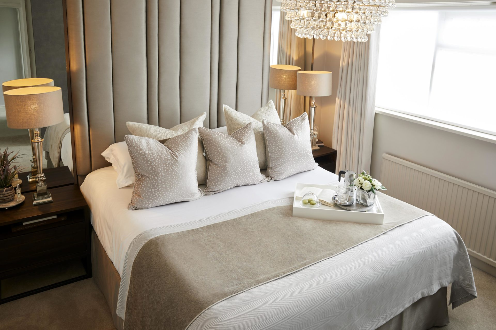

Hotel Noorjahan Grand
Hotel Noorjahan Grand
#1 of 20 Hotels in Sylhet City
Waves 1, Ritz Tower, Dargah Gate,
Sylhet City 3100,
Bangladesh
Google Map:
Hotel Mira Garden
Hotel Mira Garden
#7 of 20 Hotels in Sylhet City
Tamabil Road | Mira Tower, Mirabazar, Sylhet City 3100, Bangladesh
Google Map:

La Rose Hotel
La Rose Hotel
#8 of 20 Hotels in Sylhet City
16 Ornob, West Dorga Gate | Mirer Moidan Point, Sylhet City 3100, Bangladesh
Google Map: